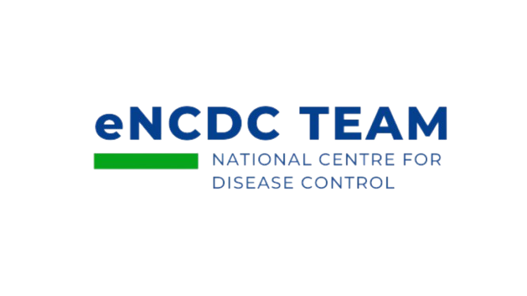

<nav class="navbar border-bottom position-relative" style="background-color: #0077B6;">
  <div class="container-fluid">

    <!-- LEFT LOGO -->
    <div class="d-flex align-items-center">
      
    </div>

    <!-- CENTER TITLE -->
    <div class="position-absolute start-50 translate-middle-x text-center">
      <span class="navbar-brand mb-0 h5 fw-semibold" style="color: white;">
        National Crisis Preparedness and Response Centre (MyCPRC)
      </span>
    </div>

    <!-- RIGHT LOGO -->
    <div class="d-flex align-items-center ms-auto">
      
    </div>

  </div>
</nav>
